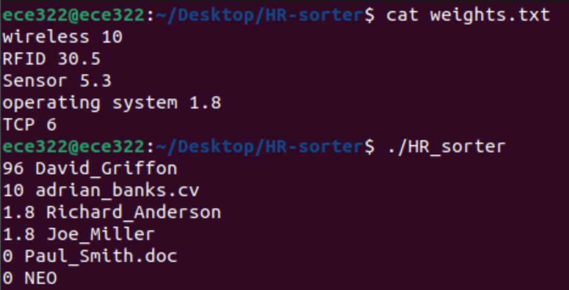
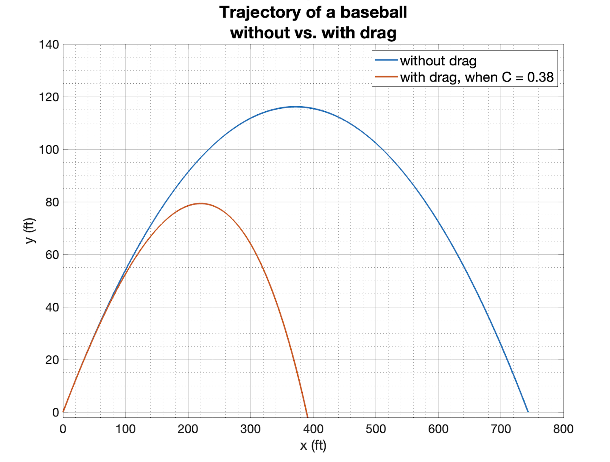

Here are all my Experiences
TinyTemp - Digital Thermometer
 In this project, I designed a compact PCB using KiCad, achieving a 33% size reduction with a sleek 2-square-inch design. I implemented power-saving algorithms in embedded C, optimizing the system to sample temperature values only when necessary. The project was completed at 76% of the cost requirements, showcasing my ability to manage resources effectively and meet budget constraints.
In this project, I designed a compact PCB using KiCad, achieving a 33% size reduction with a sleek 2-square-inch design. I implemented power-saving algorithms in embedded C, optimizing the system to sample temperature values only when necessary. The project was completed at 76% of the cost requirements, showcasing my ability to manage resources effectively and meet budget constraints.
Links:
TravelTime, Real-time Bus Information Display
 I developed a system that provides real-time transit information by utilizing a public transit API. The project involved integrating an Arduino Mega and ESP8266 using serial communication for accurate bus updates. I implemented 7-segment displays for timing and an LCD screen to clearly present bus information, ensuring easy and quick access to real-time updates.
I developed a system that provides real-time transit information by utilizing a public transit API. The project involved integrating an Arduino Mega and ESP8266 using serial communication for accurate bus updates. I implemented 7-segment displays for timing and an LCD screen to clearly present bus information, ensuring easy and quick access to real-time updates.
Links:
keyRING, a Smart Key Holder
 As part of the keyRING project, I designed a system that senses keys using a spring-like mechanical switch and a sonar sensor to detect door movement. I programmed the ATmega328P in C to communicate with the switch for key detection using interrupts. This cost-effective design earned the "Cheapest Hardware Hack" award while achieving all project goals.
As part of the keyRING project, I designed a system that senses keys using a spring-like mechanical switch and a sonar sensor to detect door movement. I programmed the ATmega328P in C to communicate with the switch for key detection using interrupts. This cost-effective design earned the "Cheapest Hardware Hack" award while achieving all project goals.
Links:
Digital Thermometer System
 For this project, I created a digital thermometer using an Arduino Uno microcontroller, a TMP36 temperature sensor, and a 7-segment display. I developed an embedded C program to display temperature readings in either Celsius or Fahrenheit, depending on the position of a push-button switch. The system was designed to show temperature with a precision of 0.1 degrees, followed by the letter 'C' or 'F.'
For this project, I created a digital thermometer using an Arduino Uno microcontroller, a TMP36 temperature sensor, and a 7-segment display. I developed an embedded C program to display temperature readings in either Celsius or Fahrenheit, depending on the position of a push-button switch. The system was designed to show temperature with a precision of 0.1 degrees, followed by the letter 'C' or 'F.'
Ultrasound-based Distance Measurement System
 I developed an ultrasound-based distance measurement system using the HC-SR04 sensor to measure object distances ranging from 5 cm to 200 cm. I programmed the ATmega328P MCU on an Arduino Uno in Embedded C to calculate distances based on the time taken by ultrasound waves to bounce back from objects. The system featured a 0.96" OLED display with a resolution of 128x64 pixels to show distance measurements in both centimeters and inches, achieving an accuracy of 1 cm.
I developed an ultrasound-based distance measurement system using the HC-SR04 sensor to measure object distances ranging from 5 cm to 200 cm. I programmed the ATmega328P MCU on an Arduino Uno in Embedded C to calculate distances based on the time taken by ultrasound waves to bounce back from objects. The system featured a 0.96" OLED display with a resolution of 128x64 pixels to show distance measurements in both centimeters and inches, achieving an accuracy of 1 cm.
Email Spam Detection
 In this project, I developed a spam email classifier using Python and the Naive Bayes algorithm. I trained the model on a labeled dataset of spam and non-spam emails and successfully applied it to classify new, unseen emails. The classifier achieved a 94.1% accuracy rate in identifying spam emails.
In this project, I developed a spam email classifier using Python and the Naive Bayes algorithm. I trained the model on a labeled dataset of spam and non-spam emails and successfully applied it to classify new, unseen emails. The classifier achieved a 94.1% accuracy rate in identifying spam emails.
HR Sorter for Resumes
I developed a bash script designed to automate the sorting of resumes based on predefined keywords and weights. The solution was implemented using bash scripting and various Unix/Linux command-line tools such as ls, echo, awk, cat, grep, sort, wc, bc, and rm. The script successfully sorted resumes, demonstrating its effectiveness in automating the process.
Decoding a Baseball's Flight Path
I analyzed the flight path of a baseball using numerical techniques in MATLAB to determine key parameters. I developed and validated a numerical method to compute the baseball's trajectory and compared the results to analytic solutions. The project involved identifying the impact of air resistance and efficiently incorporating drag into the model, with results visualized through informative plots.
Designing an Efficient Database
 I designed an efficient dictionary database in Python, implementing basic sorting and searching algorithms.
The project included creating various applications such as word searching, spell checking, finding anagrams, creating a Scrabble helper tool, and cracking a code locker.
I designed an efficient dictionary database in Python, implementing basic sorting and searching algorithms.
The project included creating various applications such as word searching, spell checking, finding anagrams, creating a Scrabble helper tool, and cracking a code locker.
KIM-1 Servo-Based Valve Control Project
 I developed a servo-based valve control system for a KIM-1 (6502-based single-board computer), enhancing the system's functionality and automation capabilities.
Through this project, I gained proficiency in assembly language programming and applied my knowledge of control systems to design and implement precise servo motor control algorithms.
I developed a servo-based valve control system for a KIM-1 (6502-based single-board computer), enhancing the system's functionality and automation capabilities.
Through this project, I gained proficiency in assembly language programming and applied my knowledge of control systems to design and implement precise servo motor control algorithms.